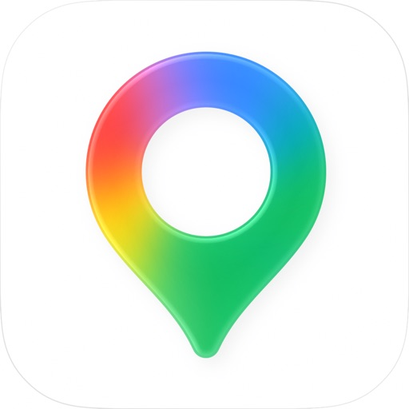
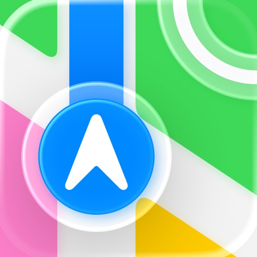

01 / 진단 무료 AI 추천 진단
우리 가게의 추천 현황,AI별로 확인하세요.
ChatGPT·Gemini가 우리 가게를 얼마나,
몇 번째로 추천하는지 반복 측정합니다.
무료 진단에서 확인
AI별 추천 결과등장률 · 평균 등장 순서
함께 비교주변 가게 · 참고 출처
고쳐야 할 점문제의 개수 확인
AI가 읽는 가게 정보, seelo가 직접 바꿉니다.
진단부터 Google·카카오 정보 정비, 전후 비교까지.
가게 이름과 지도 링크로 시작 · 계정당 첫 진단 무료
01 / 진단 무료 AI 추천 진단
ChatGPT·Gemini가 우리 가게를 얼마나,
몇 번째로 추천하는지 반복 측정합니다.
02 / 정비 Google·카카오 지도 정보
현재 값·바꿀 값·이유를 확인하세요.
필요한 누락만 묻고 준비된 변경을 반영합니다.

Google 지도 카카오맵
카카오맵음식·가격·판매 조건
현재 영업 안내·공식 정보
03 / 비교 정비 완료 14일 뒤
실제 정비가 끝난 날부터 14일 뒤,
같은 질문·AI·반복 횟수로 다시 측정합니다.
이용 순서
가입 후 가게 이름과 지도 링크를 등록합니다.
AI가 같은 가게의 자료를 찾아 조사합니다.
추천 현황·주변 가게·출처와 고칠 점의 개수를 확인합니다.
신청 승인 후 Google·카카오 관리 권한을 연결합니다.
누락만 보완하고 준비된 변경을 승인합니다. 수정 후 공개 반영을 확인합니다.
정비 완료일부터 14일 뒤 같은 조건으로 다시 측정합니다.
AI 조사 · 필요한 정보만 보완
소개·메뉴·공식 안내와 현재 값을 대조합니다.
사장님께는 꼭 필요한 누락만 묻고,
준비된 변경만 승인받습니다.
AI별 추천 등장률·평균 등장 순서, 주변 가게 비교, 참고 출처와 고쳐야 할 점의 개수를 보여 드립니다. 구체적인 변경안은 정비 신청 승인과 지도 연결 후 확인합니다.
현재는 Google 지도와 카카오맵의 소개·메뉴·가격·영업시간 등 실제 지원되는 칸을 정비합니다. 네이버는 가게 식별과 기본정보 비교에 사용합니다.
가게 이름과 지도 링크로 시작하세요. 정비 신청이 승인되면 지도 관리 권한을 연결하고, 필요한 누락만 보완한 뒤 준비된 변경을 승인합니다.
실제 정비 완료일부터 14일 뒤, 정비 전과 같은 질문·AI·반복 횟수로 다시 측정합니다.
소개·메뉴·가격·영업시간·공식 링크
한 줄 소개·영업시간·가격 정보·서비스


 Facebook
Facebook 당근
당근 샤오홍슈
샤오홍슈
Apple 지도계정당 첫 진단 1회 무료
가게 이름과 지도 링크로 시작합니다.